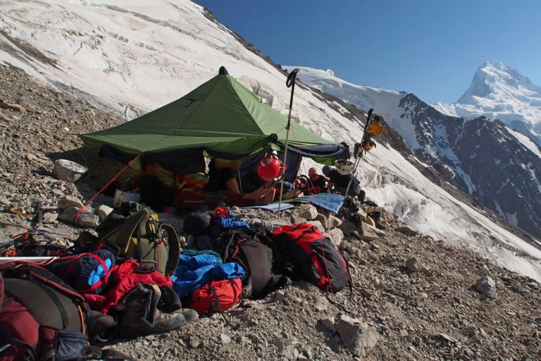

Відпочинок - важива складова успіху!
Потрібно приділати багато уваги ночівлі та відпочинку! Людина в горах, яка не має сил = мертва людина. Але і відпочивати потрібно правильно
До недавнього часу я думав, що в горах можна спати або робити вигляд в: притулках, наметах, бівуачних будках, снігових печерах або ямах, на стіні в платформах, просто на килимку на поличці, в прибитих до стіни гамаках, полувіся-напівсидячи на станції , стоячи на полиці в ширину черевика, спираючись на натягнуту самострахування. Ще годі й спати і нонстопом по 27 годин (більше не пробував). Але про намети в горах я не чув. Ні, на якісь фотки в інтернетах натикався, але очі йшли по ним по дотичній. шатер Fram Equipment
Однак, до нової інформації я відкритий і так сталося, що мені в руки потрапило це диво outdoor промисловості - шатер Fram Equipment. Випробувати було вирішено в Карпатах. Вітчизняні гори хоч і невеликі, але взимку можуть бути суворі, тому багато елементів спорядження тестувати там цілком реально, тому що карколомний вітер і обморожітельние температури моделюють обстановку досить високих гір. Оскільки конструкція для мене нова, Олексій Келін провів бліц майстер-клас із встановлення намету. З нього я запам'ятав лише, що потрібна спеціально навчена дівчинка, яка танцюватиме навколо жердини - центрального силового елемента цієї споруди. Ми про всяк випадок для цієї ключової функції виділили дві дівчинки.
1.Шатер Fram Equipment
2.Дівчата і жердину
Іншим дій з алгоритму установки місця в осередку пам'яті не знайшлося, тому винаходили на ходу. Ви підсумку, ставили довго і поставили криво. Але, підбадьорювала вітерцем, визнали намет стоїть і заселилися. Модель намету, надана нам у розпорядження офіційно вважається семиместной. Ми були вшістьох. Було тісно. Однак, тут не в нестачі місця справа, а в тому що у нас було різнокаліберних не стандартизовані спорядження. Наприклад широкий і товстий надувастік займав площу явно більшу, ніж одна шоста дна. Тому ми його використовували як диван. шатер Fram Equipment Диван і камін - навіть в зимових Карпатах може бути easy-breezy
Тут хочеться зробити ліричний відступ і розглянути відмінність філософій альпінізму і гірського туризму. В альпінізмі останнім часом превалюють малі групи - двійки-трійки. Часто є комфортний базовий табір. Виходи на гору не так щоб дуже довгі. Тому альпіністи зазвичай на горі живуть в маленьких наметах. А для відпочинку між горами або виходами спускаються в БЛ, де є стаціонарні намети в зріст людини з розеткою і лампочкою, або в непальскую лоджії або в апартаменти з джакузі в Шамоні. Де і відпочивають в комфорті і достатку їжі. На горі ж туляться як доведеться і їдять, що в кишенях завалялося.
Альпіністське бачення ночівель
У гірському туризмі інакше. Команди великі. Інакше стрьомно, тому що якщо це складні походи, то це край географії, і вся надія тільки на себе. Тулиться не варіант. Оскільки ні джакузі, ні навіть лампочки не буде і місце, де сплять має бути максимально комфортним, що дозволяє за ніч відновиться і йти далі. І так кожен день місяць поспіль. З харчуванням теж доводиться морочитися уважніше. У питанні вимог до спорядження навпаки, є єдність - спорядження повинне бути максимально легким і при цьому забезпечувати надійний захист від вельми агресивного зовнішнього середовища. Різниця лише в тому, що в альпінізмі часто маршрут більш вертикальний, а відповідно часто нікуди навіть маленький намет ставити, не кажучи про такий шапіто. У туризмі ж, як мені здається, з місцем простіше - можна або осип розрівняти або в снігу майданчик зробити. І ось під ці вихідні дані і були придумані намети Fram Equipment. Але я не вважаю кастову кордон між альпіністами і гірськими туристами не перетинаються. Буває і альпінізм це скоріше туризм. Карпати взимку якраз той випадок. Група у на збула величезна, місця валом - ось ми і вирішили спробувати.
Тепер що напробовалісь. Шатер можна вважати легким. Маса нашої моделі 6,7 кг, тобто в наявності при шістьох доводиться 1,12 кг. Якщо взяти однакові килимки і буде семеро - 0,96 кг. Якщо порівнювати ультралегким однослойкамі, то багато. Але вони дорогі, холодні і взагалі не для всіх. Тут потрібно порівнювати зі звичайними наметами - тоді норм. Якщо це робити не вперше, ставиться намет швидко. Причому, не потрібно втрачати на вітрі і морозі пальці пропіхівая дуги в вузькі кишені або пораючись з якимись гачками. Все просто, тому і швидко. Знімається взагалі блискавично. Між зовнішнім і внутрішнім тентом півметра відстань, яку можна захламить рюкзаками або спорядженням. Виходить спальне відділення не завантажене барахлом, входить не завалені теж. Дно відстібається, тому можна черпати з під намети сніг для готування не виходячи з спальника. Особливо спритні можуть спробувати виконати команду «жовтий сніг» теж практично лежачи в спальнику. Але тут головне не переплутати з місцем для забору снігу. Нами це не випробувати через невідповідність погодних умов, але є ще унікальна можливість відвернути і закріпити полог намету. Таким чином, отримавши і тінь і вітерець. Хто сидів, балансуючи на грані теплового удару, високо в горах в сонячний день в наметі з вічно стікають